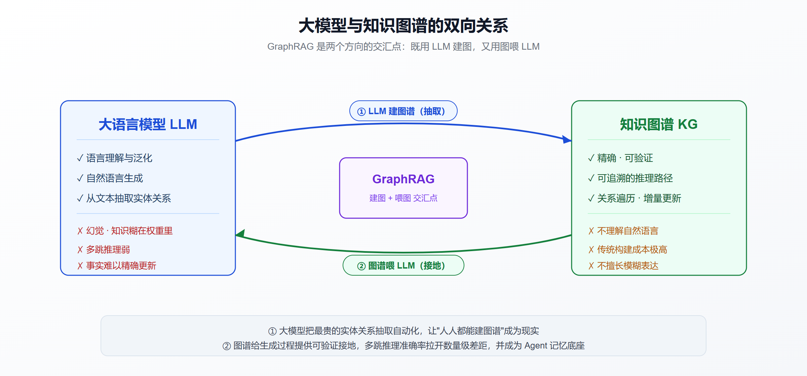

大模型与知识图谱的双向奔赴：从 GraphRAG 到图原生 Agent 的 2026 全景
引言：一道向量检索答不出来的题
给你 1000 份供应链文档，问一个看起来很普通的问题："哪些既是零件 X 的供应商、又通过了标准 Y 认证的厂商？"
向量检索会老老实实地找出一堆"和这句话语义相近"的文本片段——关于供应商的、关于零件 X 的、关于认证 Y 的，然后把它们塞给大模型。问题在于，答案根本不在任何单一片段里，它藏在"供应商 → 零件 → 认证"这条跨了三个实体的关系链上。相似度检索天生看不见这条链。
V7 Labs 的一份基准测试把这个差距量化了出来：在文档规模从 10 篇涨到 1000 篇的过程中，图检索的准确率稳定在 94%-97%，而向量检索一路掉到 72%，在那些真正决定成败的关系型问题上，甚至跌到了 36%（V7 Labs）。
这不是说向量检索不行，而是说：当问题需要沿着关系推理、而不只是找相似内容时，检索架构的拓扑结构本身，决定了你能不能拿到正确答案。
于是 2026 年出现了一个略显反直觉的景象：在大模型狂飙的时代，一个"老技术"——知识图谱，反而迎来了第二春。而且这次不是图谱单方面被大模型取代，而是两者在互相成就：大模型把知识图谱最贵的构建环节做成了自动化流水线，知识图谱又反过来成了大模型和 Agent 最可靠的记忆与推理底座。
本文就沿着这条"双向奔赴"的主线，拆开两个方向：LLM 怎么建图谱（GraphRAG），图谱怎么喂 Agent（图原生 Agent 与记忆系统），以及这套组合拳到底解决了什么、又要付出什么代价。
一、先厘清：知识图谱和大模型到底是什么关系
在展开之前，得先把一个容易混淆的问题说清楚：知识图谱和大模型，不是二选一的替代关系，而是能力互补的两种知识表示。
大模型把知识压缩进了几千亿个参数里，它擅长语言理解、泛化、生成，但知识是"糊"在权重里的——你没法精确指出某条事实存在哪、也没法保证它不会被"编造"出来（幻觉），更没法在不重训的情况下干净地更新一条过时的事实。
知识图谱用"实体—关系—实体"的三元组显式地存储知识（比如"零件X—供应商是—厂商A"），它精确、可验证、可追溯、可增量更新，但它不会自己"理解"自然语言，也不擅长处理模糊、开放的表达。
两者的短板恰好是对方的长板。所以它们的结合有两个天然的方向：
- LLM → KG（大模型建图谱）：用大模型的语言理解能力，把非结构化文本自动抽取成结构化图谱。这解决了知识图谱几十年来最大的痛点——构建太贵。
- KG → LLM（图谱喂大模型）：用知识图谱的结构化、可验证知识，给大模型的生成过程"接地"（grounding），降低幻觉、支持多跳推理、暴露推理路径。
GraphRAG 是这两个方向的交汇点：它既用 LLM 建图，又用图喂 LLM。我们先看建图这一侧。

二、方向一：大模型如何"建"知识图谱
2.1 GraphRAG：微软点燃的这把火
知识图谱不是新东西，谷歌 2012 年就用它撑起了搜索。但过去几十年，知识图谱一直有个绕不过去的门槛：构建成本极高。你需要领域专家定义本体（ontology）、需要人工或半自动地从文档里抽取实体和关系、需要持续维护——一套企业级图谱建下来动辄几个月、几百万预算。
大模型改变了这件事。2024 年微软研究院开源的 GraphRAG，核心思路是：用大模型自动地从任意文本集合里抽取出一张丰富的知识图谱（Microsoft Research）。整个过程是端到端的：
- 实体与关系抽取：LLM 逐块读原始文本，在领域提示词的引导下，抽取出实体、关系和属性，用它们构建图谱（Microsoft Research）。
- 社区检测：在图谱上跑图算法，把紧密关联的实体聚成一个个"社区"（community）。
- 分层摘要：为每个社区预先生成领域特定的摘要报告，形成一个自底向上的摘要层级（arXiv 2404.16130）。
- 查询时利用结构：回答问题时，不再只是找相似片段，而是利用图结构和社区摘要来组织上下文。
微软官方博客里对这套流程的概括很精炼：GraphRAG 就是把文本抽取、网络分析、LLM 提示与摘要，整合进一个端到端系统的技术（Microsoft Research 项目页）。
关键在于第 1 步：过去需要专家手工做的实体关系抽取，现在交给了大模型。这就是"大模型建图谱"的本质——它没有取代知识图谱，而是把知识图谱的入场券价格打了下来。
2.2 从"平面向量"到"结构化图谱"的范式跃迁
国内的讨论里，把这件事描述为检索增强生成正在经历"从平面向量到知识图谱的范式跃迁"（从向量到图谱：2026年GraphRAG如何重塑企业后端智能架构 - 博客园）。腾讯云的文档也把 GraphRAG 定义为把知识图谱与大语言模型深度融合的检索增强方案，支持从非结构化文档中自动抽取实体、关系与属性（腾讯云）。
这里值得强调一个认知：GraphRAG 里的"图谱"往往不是给人看的、精雕细琢的领域本体，而是给检索用的、LLM 自动生成的中间产物。 它可能不完美、可能有噪声，但只要它能在检索时把相关实体连起来，就完成了使命。这和传统知识工程追求"图谱本身的完备与优雅"是两种哲学。
2.3 谁在做这件事
这条赛道现在相当热闹：
- 微软 GraphRAG：开源标杆，定义了实体抽取 → 社区检测 → 分层摘要的范式（GitHub）。
- Neo4j：老牌图数据库，主打 agentic RAG 与图谱基础设施（Neo4j）。
- NebulaGraph：国内较早提出把知识图谱、图数据库作为大模型结合私有知识系统技术栈的团队（博客园）。
- 腾讯云：把 GraphRAG 做成了智能体开发平台的一个能力模块。
- Fluree / Cognee 等：分别从数据层和多源结构化角度切入。
如果你对图谱在代码理解场景的应用感兴趣，可以延伸阅读我们此前写过的 CodeGraph：给 AI 编程装上代码知识图谱 和 Graphify vs CodeGraph——它们是"大模型建图谱"在软件工程领域的具体落地。
三、方向二：知识图谱如何"喂"大模型与 Agent
建好了图谱，反过来就要用它来增强大模型的输出。这一侧解决的是大模型的两个老毛病：幻觉和多跳推理弱。
3.1 KG-RAG：给生成过程"接地"
把结构化、可验证的知识图谱和大模型耦合起来，学界称之为 KG-RAG。它的价值被总结得很直白：用可验证的知识图谱来减少幻觉、并暴露推理轨迹（arXiv 2509.26383）。
"暴露推理轨迹"这点尤其重要。向量检索给你一堆片段，你不知道模型是怎么把它们串起来得出结论的；而图谱检索走的是明确的关系路径——"从实体 A，经过关系 R1 到实体 B，再经过关系 R2 到实体 C"，这条路径本身就是可审计的推理链。在金融、法律、医疗这些需要可解释、可追责的场景，这是刚需。
3.2 GraphRAG 到底强在哪、弱在哪
综合多个基准和实践报告，图谱增强的优势集中在几类问题上：
图谱明显更强的场景：
- 多跳推理：需要连接多个实体才能回答的问题。有实践者报告，在多跳子集上，图谱接地的 LLM 得分 56.2%，而纯 LLM 基线只有 16.7%（Medium）。
- 跨文档关系聚合：答案分散在多份文档里，需要沿关系拼起来。Fluree 的基准里举的例子正是"哪些供应商同时通过了某认证"这类关系链问题（Fluree）。
- 全局性总结：需要对整个语料有全局把握，而不是找几个局部片段。这正是社区摘要的用武之地。
图谱不划算的场景：
- 简单的单跳事实查询，向量检索又快又准，上图谱是杀鸡用牛刀。有分析直言 GraphRAG 和 PageIndex（向量类）解决的是根本不同的问题，选型要看查询类型（Medium）。
一个更中肯的判断是：当查询需要遍历关系、而不只是找相似内容时，图谱才值得上。 否则就是给系统凭空增加复杂度和成本。这也解释了为什么越来越多生产系统走的是"向量 + 图谱"混合检索，而不是二选一。
3.3 代价：GraphRAG 不是免费的午餐
需要强调的是：GraphRAG 的准确率是拿成本换来的。相比标准 RAG 只在查询时调用一次 LLM，GraphRAG 有三处 LLM 开销：每块文本一次实体抽取、每个社区一次分层摘要、查询时一次生成（Spheron）。
这意味着：
- 构建阶段贵：处理大语料时，实体抽取和社区摘要的 LLM 调用量非常可观，直接影响你的算力预算和建库时间。
- 图谱质量依赖抽取质量：LLM 抽取会引入语义噪声，图谱里可能有错误的实体合并、遗漏的关系。有研究专门针对"昂贵的图遍历"和"LLM 生成摘要的语义噪声"提出优化，声称在多跳 QA 上取得竞争力的同时把检索延迟最多降低 28.8 倍（arXiv 2602.20926）。
- 一次性检索僵化：传统 GraphRAG 的检索是一次性的、固定的，对复杂问题不够灵活——这正是下一节"图原生 Agent"要解决的。
四、进阶：从 RAG 到"图原生 Agent"
如果说前面讲的是"图谱作为知识库"，那 2026 年最前沿的方向，是让 Agent 主动地、多轮地去操作图谱——也就是把检索本身变成一个 Agent 的自主行为。
4.1 Agentic GraphRAG：让 Agent 自己决定怎么查
标准 RAG 是"检索一次，然后生成"。而 agentic RAG 的起点是 Agent 先理解查询、推理该怎么回答，它包含规划、工具选择、多轮检索与评估，最后才生成（Neo4j）。
把这个思路用到图谱上，就是 Agentic GraphRAG。一个代表性工作是 Graph-R1：它把 GraphRAG 面临的高构建成本、一次性检索僵化、过度依赖长上下文和提示工程等问题，通过端到端强化学习来解决——引入轻量级知识超图构建，把检索建模成多轮的 Agent-环境交互，并用端到端奖励机制来优化整个检索过程（arXiv 2507.21892）。
通俗地说：Agent 不再是被动地拿到一次检索结果，而是像人做研究一样——先查一下，看看结果，决定下一步查什么，再查，直到攒够证据才作答。这种"多轮、自适应、成本感知"的图检索，正在成为新范式（arXiv 2601.21162）。
行业里甚至已经出现了"从检索增强生成到图原生 Agent（graph-native agents）"的提法（SSRN）——图谱不再是外挂的知识库，而是 Agent 思考和行动的原生数据结构。
4.2 知识图谱作为 Agent 的长期记忆
Agent 的另一个刚需是记忆。大模型本身无状态，Agent 要在长周期任务里"记住"用户偏好、历史决策、领域知识，就需要一层持久化记忆。而知识图谱，正在成为这层记忆最有力的候选之一。
腾讯云的技术文章把这个矛盾点出得很清楚：2026 年 AI Agent 已从单轮问答工具迈向长周期任务伙伴，但随之而来的"长程记忆衰退"与"知识更新滞后"，正成为企业级复杂场景落地的最大天花板（腾讯云）。
为什么图谱适合做记忆？因为 Agent 的记忆天然是关系型的——"用户 A 上周提到过项目 P，项目 P 依赖组件 C，组件 C 上个月出过故障"——这种交织的事实，用图谱表达比用一堆文本片段自然得多。
如果你想深入 Agent 记忆的分层原理和方案横评，可以看我们此前的专文 AI Agent 记忆系统全解析。这里聚焦图谱这条路线。
4.3 时序知识图谱：Zep / Graphiti 的巧思
Agent 记忆有个特别的难点：事实会随时间变化。 用户上个月说"我在 A 公司"，这个月跳槽到了 B 公司——两条信息都是"真的"，但有效时间不同。普通图谱会矛盾，普通向量库会两条都返回，让模型无所适从。
Zep 开源的 Graphiti 引擎给出的答案是时序知识图谱：它建模实体关系随时间的演化，追踪事实如何变化——用一个形象的说法，在这里事实是会"过期"（expire）的，而不是被直接删除（digitalapplied）。这样 Agent 既能知道"现在的事实"，又能回溯"曾经的事实"。
数据也很能打。根据 Zep 公布的研究结果，在 LongMemEval 上准确率 90.2%，在 LoCoMo 上准确率 94.7%，检索延迟 p50 在 87-104ms 量级（Zep Research）。其论文进一步称，相比基线实现，准确率提升最高达 18.5%，同时响应延迟降低 90%（arXiv 2501.13956）。
4.4 记忆方案的路线之争：图谱不是唯一解
要保持清醒：图谱记忆不是万能药，这个赛道存在真实的路线分歧。
有一篇对比把三种主流开源记忆方案的哲学讲得很到位：一种把记忆当作后台抽取流水线，一种把记忆当作 Agent 自己可编辑的分层结构，还有一种把记忆当作事实会过期的时序知识图谱——选哪个是架构决策，不是功能对比（digitalapplied）。
- Zep / Graphiti：时序知识图谱路线，强在事实演化追踪和关系推理。
- Mem0：更像后台抽取流水线，强在效率。有研究指出在分布式多智能体系统中，mem0 在加载速度、资源消耗、网络开销上显著优于 Graphiti，而准确率差异不具统计显著性（arXiv 2601.07978）。
- Letta（原 MemGPT）：把记忆做成 Agent 自己可编辑的分层记忆。
- Cognee：从 PDF、Slack、Notion、图片、音频等多源数据抽取结构化知识，建成可查询的图谱（vectorize）。
需要提醒的是，这个领域的基准测试口径存在争议。比如 Zep 与 Mem0 之间就有过 84% vs 58.44% 的基准分歧，而有分析指出那场争论衡量的是对话召回，而非企业数据准确率（Atlan）。所以看到"某方案吊打某方案"的说法时，先看清楚它测的到底是什么。
五、落地建议：什么时候该上图谱
把前面的分析收敛成可操作的判断，给正在做选型的团队几条建议。
该上知识图谱 / GraphRAG 的信号：
- 你的问题大量涉及多跳推理、跨文档关系、实体之间的连接（供应链、组织架构、合规链条、故障影响分析等）。
- 你需要可解释、可审计的推理路径（金融、法律、医疗、监管场景）。
- 你的数据本身就是高度关系型的，硬塞进向量库会丢失结构信息。
- Agent 需要长期、演化的记忆，而记忆内容彼此关联很强。
先别急着上图谱的信号：
- 大部分查询是简单的单跳事实检索——向量检索又快又便宜。
- 语料规模不大、更新不频繁——图谱的构建成本摊不平。
- 团队没有图数据库和图谱运维经验——引入的复杂度可能大于收益。
更务实的中间路线：
- 混合检索：向量负责语义召回、图谱负责关系遍历，两者互补。这是目前生产系统的主流做法。
- 成本前置评估：建库前先估算实体抽取和社区摘要的 LLM 调用量，别等账单来了才后悔。
- 抽取质量把关：LLM 建出的图谱要抽样验证，警惕错误的实体合并和遗漏关系带来的语义噪声。
- 从小场景切入：先用一个高价值、强关系的子场景验证 ROI，再决定要不要铺开。
如果你在做企业级 RAG 选型，可以对照我们之前的 开源向量数据库横评 和 Dify/Coze/RAGFlow/n8n/FastGPT 对比——很多平台已经内置了 GraphRAG 能力，不必从零自建。
小结
大模型和知识图谱的关系，不是谁取代谁，而是一场双向奔赴：
- LLM → 图谱：大模型把知识图谱最贵的实体关系抽取环节做成了自动化流水线，GraphRAG 让"人人都能建图谱"从口号变成现实，代价是不菲的构建 LLM 开销和需要把关的抽取质量。
- 图谱 → LLM/Agent：知识图谱给大模型的生成过程提供了可验证、可追溯的接地，在多跳推理和跨文档关系上把准确率拉开了数量级的差距，还成了 Agent 长期记忆和图原生推理的底座。
2026 年最值得关注的信号，是这两个方向正在融合成"图原生 Agent"——Agent 不再被动使用图谱，而是主动地、多轮地、成本感知地去构建和遍历图谱。时序知识图谱让记忆里的事实会"过期"而非消失，强化学习让检索变成 Agent 的自主策略。
但热潮之下要保持清醒：图谱不是万能药，简单查询别上图谱，基准数字要看清口径，混合检索往往比纯图谱更务实。把图谱用在它真正擅长的关系推理上，它就是大模型时代最好的搭档；用错了地方，它只是一笔昂贵的复杂度。
免责声明
本文基于公开资料与基准测试整理，所涉及的准确率、延迟等数据均来自各方公布的测试结果，测试口径、数据集和场景不同，数字之间不宜直接横向比较，仅供技术选型参考。文中提及的开源项目和商业产品均在快速迭代，具体能力请以官方最新文档为准。本文不构成任何投资建议或采购建议。
参考来源
- Microsoft Research：GraphRAG — New tool for complex data discovery
- Microsoft Research：GraphRAG auto-tuning provides rapid adaptation to new domains
- Microsoft Research：GraphRAG 项目页
- arXiv 2404.16130：A Graph RAG Approach to Query-Focused Summarization
- microsoft/graphrag GitHub 文档
- Spheron：Deploy GraphRAG on GPU Cloud (2026 Guide)
- V7 Labs：GraphRAG vs RAG — The Accuracy Benchmark at 1,000 Documents
- Fluree：LLM Accuracy Benchmark
- arXiv 2602.20926：HyperNode Expansion for Accurate and Efficient GraphRAG
- arXiv 2509.26383：Efficient and Transferable Agentic Knowledge Graph RAG via RL
- arXiv 2507.21892：Towards Agentic GraphRAG via End-to-end RL (Graph-R1)
- arXiv 2601.21162：Adaptive Agentic Graph Retrieval for Cost-Aware and Reliable Reasoning
- SSRN：From Retrieval-augmented Generation to Graph-native Agents
- Neo4j：What is agentic RAG?
- Zep Research（LongMemEval / LoCoMo 基准）
- arXiv 2501.13956：A Temporal Knowledge Graph Architecture for Agent Memory
- arXiv 2601.07978：Cost and accuracy of long-term graph memory in multi-agent systems
- digitalapplied：Mem0 vs Letta vs Zep Compared
- vectorize：Zep vs Cognee — AI Agent Memory Compared (2026)
- Atlan：Zep vs Mem0 — Benchmarks, Pricing, and When to Use Each
- 腾讯云：Agent 长程记忆架构与知识图谱动态演化
- 腾讯云：知识图谱 GraphRAG 文档
- Medium：I Was Wrong About Vector-Only RAG
- Medium：GraphRAG vs PageIndex
相关阅读
- AI Agent 记忆系统全解析：原理拆解、五大开源方案与真实应用场景
- CodeGraph：给 AI 编程装上代码知识图谱
- Graphify vs CodeGraph：代码知识图谱的分叉之路
- 开源向量数据库横评 2026
- Dify vs Coze vs RAGFlow vs n8n vs FastGPT 对比
- 从 LLM 到 Agent：ChatGPT 式对话正在死去
推荐搭配装备
善其事，利其器。以下硬件能最大化你的效率体验👇
🔗 通过以上链接购买可支持本站持续运营 🙏